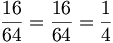

De: La Frikipedia, la enciclopedia extremadamente seria.
De: La Frikipedia, la enciclopedia extremadamente seria. De: La Frikipedia, la enciclopedia extremadamente seria.
Nacido en Lebrija a edad muy temprana, donde muy temprano también (a las 7 de la mañana o así) empezó a dedicarse a la ciencia. A los 5 años había descubierto el orinal.
Su adolescencia estuvo marcada por su nombre, puesto que fue conocido por el nombre de Aitor Menta hasta los 21 años, edad en que se lo cambió a Leandro Gao. Esto le provocó terribles secuelas, como su conocidísima aversión patológica llamada verdosalerolanzofobia, o miedo al lanzamiento de saleros verdes.
A los 30 se graduó en la prestigiosa universidad de Utrera, con título de Honoris Causa en matemática avanzada, y en Física de los Estados Sólido, Líquido y Gaesoso. Estos títulos le vinieron que ni al pelo después a la hora de revolucionar el consumo de sustancias estupefacientes.
Este importante físico teórico ha recibido un premio Nobel de Biología por sus estudios infatigables sobre la intoxicación humana. ¿Por qué un físico teórico decidió estudiar este área de la biología con tanto ahínco? La ampliación de su campo de estudio se debió a la experimentación con su propio cuerpo. Su sed insaciable de alcohol conocimientos le llevó a territorios poco explorados por sus colegas.
Nuestro ídolo nunca fue remiso a la hora de probar nuevas experiencias. Su encuentro con el alcohol, a la tierna edad de ocho añitos, dio lugar a un romance que acabaría reforzando su inteligencia. Esto pudo ser así gracias a su afamada teoría de la "horda de bisontes":
«Un tema: cuando el puma caza un bisonte atrapa siempre a los miembros más débiles de la manada. Los supervivientes son más rápidos, y de esa forma el puma ayuda a los bisontes: en realidad fortalece la manada. Igualmente, cuando el alcohol mata neuronas siempre caen las más lentas, afinando el cerebro. Por eso yo lo tengo tan tuneado.»
~ Leandro Gao sobre el alcohol
«Gamarero, odra gopa, bor bafor. Y gue sea de güisgui del bueno, gue el garafón be da la risa floja, ga ga ga. Buááá, Nadie me guiere, se biensan gue estoy borasho.»
~ Leandro Gao tres horas después
Gao descubrió, a la edad de 13 años, que la bebida denominada "kalimotxo" (coca-cola con vino) tenía una cantidad de alcohol parecida a la de la cerveza, con lo que instauró la paz en numerosos botellones. Dicha cantidad era aproximadamente  pizcos/puñao.
pizcos/puñao.
Poco después creó el kalimotxo light, como muestra de rebeldía, y para atraer a más tías a los botellones de la época.
A los 14 años Leandro estaba ya un poco cansado del alcohol, así que se decidió a pasarse a la marihuana. Y, ¡oh maravilla!, este romance continúa hoy en día. Ocasionales flirteos con la heroína, la cocaína, pastis, bonguis, el pegamento en barra, el líquido de frenos, el anticongelante marca Hacendaño y otras drogas no han frenado su entusiasmo por la hoja de las cinco puntas.
A la edad de 18 años y medio desubrió la forma de liar un porro sin romper el cigarrillo, sacando cuidadosamente todo el tabaco, mezclándolo con la maría y volviéndolo a introducir en el cigarillo, eliminando la necesidad del siempre tan ausente papelillo. A este invento lo denominó porro paciencias.
La fabricación industrial del Porro Paciencias es hoy una realidad en varias ex-repúblicas soviéticas.
Otra droga dura, el tocino puede ser perjudicial para varios órganos internos que empiezan con una vocal o en hache muda. Leandro demostró sin lugar a dudas su relación con la velocidad: la velocidad de la carrera (mayor al principio y disminuyendo luego según el cuerpo se atocina), la velocidad de sedimentación de la sangre (siempre creciente) y la velocidad con la que se va uno a la tumba (rapidísima).
Tras abandonar su consumo, Leandro fue capaz de correr la milla en menos de 45 minutos, demonstrando una vez más la innegable relación del tocino con la velocidad.
Nunca alguien que se dejara amedrentar fácilmente, Leandro Gao ha invadido varios otros ámbitos académicos ajenos, dejándolos patas arriba.
Dentro del marco de la Teología Teórica, el Dr. Gao ha disputado varios dogmas principales del Catolicismo: la virginidad de María, la Trinidad de la Santísima Trinidad, la Sábana Santa y la infalibilidad del Papa. Esto le ha llevado a ser uno de los exponentes fundamentales del Anarcocatolicismo, tan falto hoy día de figuras relevantes. En sus ratos libres el buen doctor es Satanista aficionado.
Nuestro héroe fue el primero en describir la famosa ecuación:  que describe la posibilidad de un ataque como el del 11-S dados los suficientes parámetros. A pesar de haber predicho cataclismos como el Huracán Mitch, el Killer Monzón de 2003 y el último disco de Rosa la Gorda, las autoridades han ignorado descaradamente sus teorías. Tras varias décadas de análisis Gao descubrió que las catástrofes pueden también prepararse, modificando el propio tejido del espacio-tiempo mediante la elaboración cuidadosa de encaje de bolillos. Esto provocó su expulsión de la Academia de las Ciencias Francesa y la devolución de la medalla de la Orden de San Fernando al mérito. (Sí mantuvo su galardón por su sobresaliente labor en el campo de la excelencia.)
Obligado a moverse en el inframundo, Gao se convirtió en una figura del Hampa y, con el paso del tiempo, en el Rey de los Bajos Fondos. Debido a su rechazo radical de la tradición criminal occidental, posiblemente causado por innumerables repeticiones de Curro Jiménez, Gao fue aceptado en la Yakuza (mafia japonesa) y es ahora Oyabun (líder) del clan de los Yamaguchi-Gumi. Para los próximos cuatrimestres Gao prepara golpes de mano como:
El sexo es otro de los temas de interés de Leandro. Rival intelectual y enemigo personal de Alessandra Rampolla, Leandro cree que la estimulación del músculo tello es esencial para la procreación humana y porcina.
A los 39 años, el Dr. Gao descubrió la forma de hacerse una mamada a uno mismo sin necesidad de extirparse una costilla. Un problema que llevaba 349 años sin resolver y que había sido investigado por otros grandes matemáticos.
| | |||
|
Materia
Magnitudes
Mecánica
Cinética y Dinámica
Energía
Física Cuántica y Nuclear
Científicos
|
Autor(es):